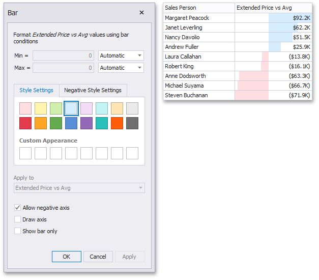

Bar
The Bar format condition allows you to visualize numeric values using bars. You can also paint bars corresponding to positive and negative values using different colors.
To format values according to the Bar condition, click the menu button of the required data item and select Add Format Rule | Bar.

This invokes the Bar dialog that allows you to specify the required settings. For instance, the following image displays a Grid dashboard item whose Extended Price cell contains data bars corresponding to numeric values.

This dialog allows you to change the following options specific to the Bar format condition.
- By default, lengths of the shortest and longest bars correspond to minimum and maximum values, respectively. If necessary, you can specify values corresponding to the shortest and longest bars manually. To do this, change the type of minimum/maximum value from Automatic to Number or Percent, and specify the required values.
- Style Settings and Negative Style Settings allow you to specify style settings used to color data bars corresponding to positive and negative values, respectively. To learn how to specify custom style settings, see the Specify Appearance Settings paragraph in the Conditional Formatting topic.
- The Allow negative axis option allows you to specify whether negative data bars are displayed in the direction opposite to the positive data bars.
- The Draw axis option specifies whether to draw the vertical axis between positive and negative data bars.
- The Show bar only option specifies whether to show bars without corresponding values.